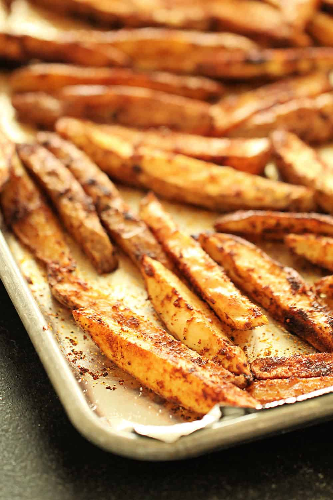

Steak Fries

Description
Steak fries are a larger, thicker cut of a regular french fry, that are often more filling.
Ingredients
- 4 medium russet potatoes
- 2 tablespoons of olive oil
- 1 tablespoon of grill seasoning
- 1 serving of cooking spray
Steps
- Thoroughly scrub your potatoes clean.
- Cut each potatoe into eigths.
- Preheat an oven to 500 degrees Fahrenheit.
- Mix together the olive oil and seasoning in a bowl.
- Add the potatoe wedges and coat them by tossing together.
- Line 2 baking sheets with lightly crumpled aluminum foil.
- Add the wedges onto the pans so that they are evenly spaced out from each other.
- Bake in the oven for about 12 minutes and flip, cooking for another 13 minutes or until golden brown.